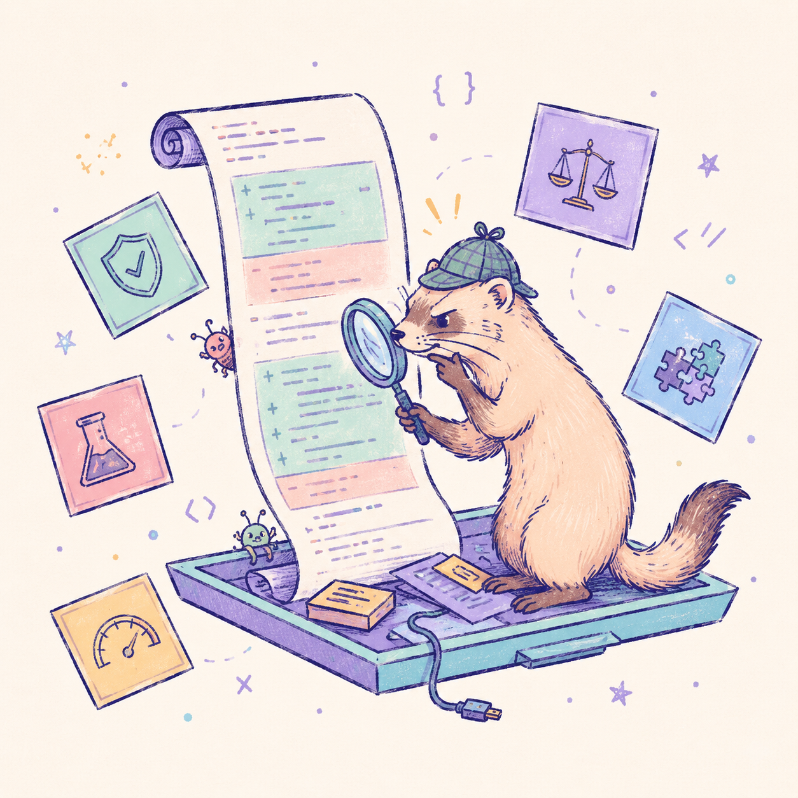

/code-ferret:review
Deep, diff-scoped semantic review
Point CodeFerret at your changes and it reads them like a detective — tracing suspicious lines across five detection vectors and reporting only what it can prove.
- Clickable
file:line:collocations, with severity and confidence per finding - Ready-to-apply patches, each checked with
git apply --check - Findings saved to
.ferret/last-review.json
# uncommitted changes vs HEAD /code-ferret:review /code-ferret:review staged # staged only /code-ferret:review main # branch vs main